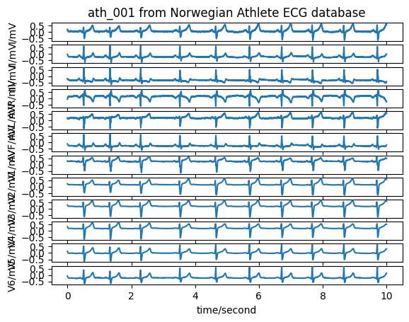

Click to see packages imported
import os
import configparser
from pathlib import Path
from typing import TypedDict, List
from enum import Enum
import wfdb
import pandas as pd
import matplotlib.pyplot as plt
import seaborn as sns
import numpy as npThis report will demonstrate that an existing clinical decision support software for diagnosis of cardiac health from electrocardiogram (ECG) consistently misdiagnoses elite athletes.

Figure: Hardware for acquisition and processing of resting ECG. Left - GE CAM acquisition module. Right - GE MAC VU360 electrocardiograph.
import os
import configparser
from pathlib import Path
from typing import TypedDict, List
from enum import Enum
import wfdb
import pandas as pd
import matplotlib.pyplot as plt
import seaborn as sns
import numpy as npThe Norwegian Endurance Athlete ECG Database (norwegian-athlete-ecg) contains 12-lead ECG recordings from 28 elite athletes from various sports in Norway. All recordings are 10 seconds resting ECGs recorded with a General Electric (GE) MAC VUE 360 electrocardiograph. All ECGs are interpreted with both the GE Marquette SL12 algorithm (version 23 (v243)) and one cardiologist with training in interpretation of athlete’s ECG. The data was collected at the University of Oslo in February and March 2020.
athlete_ecg_dir = data_dir / "norwegian-athlete-ecg" / "1.0.0"An example of the data for athlete ath_001 is shown below.
# 12-lead ECG recording from subject ath_001
record = wfdb.rdrecord(athlete_ecg_dir / "ath_001")
wfdb.plot_wfdb(record=record, title='ath_001 from Norwegian Athlete ECG database')
# Machine (SL12) and Cardiologist (C) interpretation of ath_001 ECG recording
record = wfdb.rdheader(athlete_ecg_dir / "ath_001")
record.__dict__["comments"]['SL12: Sinus bradycardia with marked sinus arrhythmia, Right axis deviation, Borderline ECG',
'C: Sinus arrhythmia, Normal ECG']class AthleteReport():
athlete_id: str
cardiologist: str
machine: str
reports_list = []
for i in range(1, 29):
athlete_id = f"ath_00{i}" if i < 10 else f"ath_0{i}"
record = wfdb.rdheader(athlete_ecg_dir / athlete_id)
comments = record.__dict__["comments"]
report: AthleteReport = {
"athlete_id": athlete_id,
"cardiologist": comments[1],
"machine": comments[0],
}
reports_list.append(report)
athlete_ecg_df = pd.DataFrame(reports_list)athlete_ecg_df.head()| athlete_id | cardiologist | machine | |
|---|---|---|---|
| 0 | ath_001 | C: Sinus arrhythmia, Normal ECG | SL12: Sinus bradycardia with marked sinus arrh... |
| 1 | ath_002 | C: Sinus arrhythmia, Right axis deviation, Nor... | SL12: Sinus bradycardia with marked sinus arrh... |
| 2 | ath_003 | C: Normal sinus rhythm, Left axis deviation, B... | SL12: Sinus bradycardia with marked sinus arrh... |
| 3 | ath_004 | C: Normal sinus rhythm, Normal ECG | SL12: Sinus bradycardia, Right axis deviation,... |
| 4 | ath_005 | C: Sinus bradycardia, normal sinus rhythm, Fir... | SL12: Sinus bradycardia and sinus arrhythmia a... |
In the norwegian-athlete-ecg dataset, findings in ECG reports are delimited by a comma (,). However, some machine findings also make use of a comma to make a follow-up comment on a finding. This is not done in any of the human cardiologist reports in the dataset.
Table: Examples of findings with follow-up comment
| Finding with follow-up comment | Record |
|---|---|
Minimal voltage criteria for LVH, may be normal variant |
ath_024 |
ST elevation, probably due to early repolarization |
ath_024 |
ST elevation, consider early repolarization, pericarditis, or injury |
ath_027 |
Follow-up comments from SL12 all seem to start with a lower-case letter, so they can be detected this way.
Some findings are also combined into one sentence using a conjunction word such as “and”.
e.g. Sinus bradycardia and sinus arrhythmia and first degree AV block
def extract_findings(report: str, follow_on: bool=True, split_and=True) -> List[str]:
"""Extract a list of all findings in a single line cardiologist report
"""
comments = report.split(': ', maxsplit=1)[1].split(', ')
# Also split multiple findings in a single comment joined by 'and'.
# e.g. Sinus bradycardia and sinus arrhythmia and first degree AV block
if split_and:
temp = []
for comment in comments:
for segment in comment.split('and'):
temp.append(segment)
comments = temp
# Cleanup (e.g. remove leading/trailing whitespace)
comments[:] = list(map(str.strip, comments))
if not follow_on:
return comments # i.e. assume every comment is a new finding
# Combine follow-on comments with parent comment to produce full finding
# for SL12 machine comments.
#
# e.g. ST elevation, consider early repolarization, pericarditis, or injury
findings = []
for i, comment in enumerate(comments):
if comment[0].isupper() or comment[0] == '*':
findings.append(comment)
else:
findings[-1] = ''.join([findings[-1], ", ", comment])
return findings# Example usage of `extract_findings()`
report = athlete_ecg_df.loc[23].machine
extract_findings(report)['Sinus bradycardia',
'Incomplete right bundle branch block',
'Minimal voltage criteria for LVH, may be normal variant',
'ST elevation, probably due to early repolarization',
'Borderline ECG']# Find every unique finding in dataset
unique_findings_sl12 = []
unique_findings_c = []
for i in range(1, 29):
athlete_id = f"ath_00{i}" if i < 10 else f"ath_0{i}"
record = wfdb.rdheader(athlete_ecg_dir / athlete_id)
comments = record.__dict__["comments"]
# Machine algorithm findings
findings_sl12 = extract_findings(comments[0])
for finding in findings_sl12:
if finding not in unique_findings_sl12:
unique_findings_sl12.append(finding)
# Cardiologist findings
findings_c = extract_findings(comments[1], follow_on=False)
for finding in findings_c:
if finding not in unique_findings_c:
unique_findings_c.append(finding)unique_findings_c['Sinus arrhythmia',
'Normal ECG',
'Right axis deviation',
'Normal sinus rhythm',
'Left axis deviation',
'Borderline ECG',
'Sinus bradycardia',
'normal sinus rhythm',
'First degree AV block',
'Left ventricular hypertrophy',
'Incomplete right bundle branch block',
'Possible left ventricular hypertrophy',
'Left atrial enlargement',
'Misplaced electrodes',
'first degree AV block']unique_findings_sl12['Sinus bradycardia with marked sinus arrhythmia',
'Right axis deviation',
'Borderline ECG',
'Left axis deviation',
'Abnormal ECG',
'Sinus bradycardia',
'Sinus bradycardia, sinus arrhythmia, first degree AV block',
'Otherwise normal ECG',
'***Critical test result: STEMI',
'Normal sinus rhythm',
'Pulmonary disease pattern',
'Incomplete right bundle branch block',
'Possible right ventricular hypertrophy',
'Cannot rule out inferior infarct age not determined',
'Anterolateral injury pattern',
'** ** ACUTE MI/STEMI** **',
"RSR' or QR pattern in V1 suggests right ventricular conduction delay",
'First degree AV block',
'Right atrial enlargement',
'Anterior infarction age not determined',
'Lateral injury pattern',
'Abnormal EKG',
'Normal sinus rhythm with sinus arrhythmia',
'Normal ECG',
'Marked sinus bradycardia',
'Lateral infarction age not determined',
'Sinus rhythm with first degree AV block',
'Sinus bradycardia with sinus arrhythmia',
'ST elevation consider anterolateral injury or acute infarction',
'Minimal voltage criteria for LVH, may be normal variant',
'ST elevation, probably due to early repolarization',
'Nonspecific intraventricular conduction delay',
'ST elevation, consider early repolarization, pericarditis, or injury',
'ST elevation consider anterolateral injury or acute infarct']TODO: Explain how we’re classifying different abnormalities.
TODO: Explain which abnormalities are relevant for athlete misdiagnosis.
# Classifying findings by the type of abnormality
class AbnormalityClass(Enum):
# overall = "Overall ECG recording" # Normal/Abnormal/Borderline etc.
rhythm = "Rhythm" # e.g. sinus rhythm
conduction = "Conduction" # e.g. bundle branch block, AV block
ischemia = "Ischemia" # e.g. ST-segment, T-wave inversion
structural = "Structural" # e.g. chamber enlargement, hypertrophy
measurement = "Measurement" # e.g. axis deviation, wide QRS, PR interval
equipment = "Equipment" # e.g. Misplaced electrodes
other = "Other"TODO: Explanation of why athlete is likely to be misinterpreted. ECG interpretation guidelines for athletes.
It is common practice to give an ECG recording or segment of a recording an overall finding of “normal”, “borderline” or “abnormal” to aid clinical decision-making.
In the norwegian-athlete-ecg dataset, human cardiologists classified 2 recordings as “borderline”, and the remaining 26 as “normal”. Observing the difference in overall finding between human cardiologist and SL12 algorithm gives an idea of the difficulty of interpretation posed by each recording.
# The final finding in each report is an "overall" classification for the
# entire ECG recording.
# We can use the difference between machine and cardiologist `OverallFinding`
# values to quantify if the disagreement is "small" or "large".
class OverallFinding(Enum):
Unknown = -99
Normal = 0
Borderline = 1
Abnormal = 2
def classifyOverallFinding(findings: List[str]) -> OverallFinding:
"""Classifies the overall finding for an ECG recording.
Assumes that the final finding in `findings` list comments on overall
finding.
"""
overall = findings[-1].lower()
if overall.find("abnormal") != -1:
return OverallFinding.Abnormal
elif overall.find("borderline") != -1:
return OverallFinding.Borderline
elif overall.find("normal") != -1:
return OverallFinding.Normal
else:
return OverallFinding.Unknown
# Quantify the "overall disagreement" between cardiologist and SL12 algorithm.
count_0 = 0 # Agree
count_1 = 0 # Disagree (small)
count_2 = 0 # Disagree (large)
count_sl12_normal = 0
count_sl12_borderline = 0
count_sl12_abnormal = 0
for i in range(1, 29):
athlete_id = f"ath_00{i}" if i < 10 else f"ath_0{i}"
record = wfdb.rdheader(athlete_ecg_dir / athlete_id)
comments = record.__dict__["comments"]
findings_sl12 = extract_findings(comments[0])
findings_c = extract_findings(comments[1])
overall_sl12 = classifyOverallFinding(findings_sl12)
overall_c = classifyOverallFinding(findings_c)
if (overall_sl12.value - overall_c.value) == 0:
count_0 += 1
elif (overall_sl12.value - overall_c.value) == 1:
count_1 += 1
elif (overall_sl12.value - overall_c.value) == 2:
count_2 += 1
if (overall_sl12 == OverallFinding.Normal):
count_sl12_normal += 1
elif (overall_sl12 == OverallFinding.Borderline):
count_sl12_borderline += 1
elif (overall_sl12 == OverallFinding.Abnormal):
count_sl12_abnormal += 1
# print(f"{athlete_id} disagreement = {overall_sl12.value - overall_c.value}\tc = {overall_c.name}")sns.set_theme(style="ticks")
fig, (ax1, ax2) = plt.subplots(1, 2)
plt.suptitle("Difference in overall findings")
#
# Stacked bar charts showing ratio of normal/borderline/abnormal findings
#
colors = sns.color_palette('pastel')[5:8]
report_source = ["Cardiologist", "SL12"]
overall_finding_labels = ["Normal", "Borderline", "Abnormal"]
overall_findings_data = {
"Normal": np.array([26, count_sl12_normal]) / 28.0,
"Borderline": np.array([2, count_sl12_borderline]) / 28.0,
"Abnormal": np.array([0, count_sl12_abnormal]) / 28.0,
}
# Iteratively build stacked bar chart, one finding class at a time.
bot_c = 0
bot_sl12 = 0
color_index = 0
for finding, counts in overall_findings_data.items():
ax1.bar(
report_source,
counts,
label=finding,
bottom=[bot_c, bot_sl12],
color=colors[color_index],
)
bot_c += counts[0]
bot_sl12 += counts[1]
color_index += 1
ax1.set_title("a) Proportion of overall findings")
ax1.set_ylabel("Proportion of athletes in dataset")
ax1.legend(loc="lower center")
#
# Pie chart summarising overall disagreement
#
colors = sns.color_palette('pastel')[2:5]
ax2.pie(
[count_0, count_1, count_2],
colors = colors,
autopct='%.0f%%',
pctdistance=0.6,
)
ax2.legend(
["Agree", "Disagree (small)", "Disagree (large)"],
bbox_to_anchor=(0.9, 0.05),
)
ax2.set_title("b) Disagreement between \nC & SL12 reports")
plt.show()Figure: Difference in overall ECG recording finding between Cardiologist (C) and Machine (SL12) reports.
athlete_ecg_df = athlete_ecg_df.assign(
overall_c=list(map(lambda x: classifyOverallFinding( extract_findings(x, follow_on=False) ).name, athlete_ecg_df.cardiologist))
)
athlete_ecg_df = athlete_ecg_df.assign(
overall_sl12=list(map(lambda x: classifyOverallFinding( extract_findings(x, follow_on=True) ).name, athlete_ecg_df.machine))
)athlete_ecg_df.head()TODO: Disagreement between cardiologist and machine for individual abnormality classes.
TODO: Add rhythm labels to dataset
# class SinusRhythmFinding(Enum):
# Tachycardia = 0 # Fast rhythm
# Bradycardia = 1 # Slow rhythm
# Point of origin: supraventricular and ventricular
# Slow/escape rhythm
#
def classifyRhythmFinding(finding: str):
"""Classifies rhythm finding from an ECG findings report
Multiple rhythm findings could be present in a single comment.
e.g. 'Sinus bradycardia with marked sinus arrhythmia'
"""
f = finding.lower()
# Is it a sinus rhythm finding?
if f.find("sinus") != -1:
if f.find("arrhythmia") != -1:
return ""
elif f.find("bradycardia") != -1:
return ""
elif f.find("tachycardia") != -1:
return ""
elif (f.find("normal") != -1) and not (f.find("abnormal") != -1:)
# Is it some other rhythm finding?
return ""